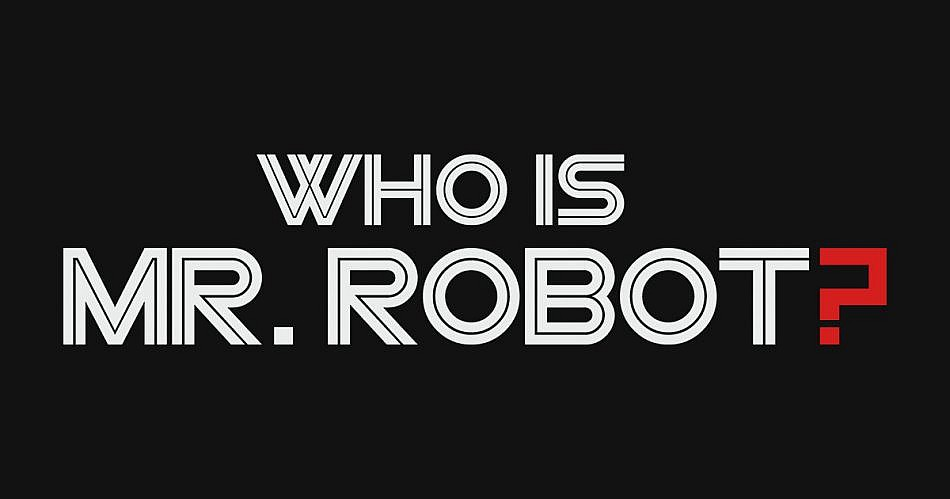

Официальные ссылки
1 https://www.whoismrrobot.com/ -Это сайт сделан для фанатов сериала "Мистер робот". Сайт переносит вас на компьютер Эллиота. Рабочий стол, на котором можно найти множество фотографий и пасхалок, консольные команды для терминала, а также в самом начале с вами свяжется подозрительный человек, и предложит вам одно дело. Хотите узнать какое? Тогда вперед, заходите на сайт и исследуйте! 
2 https://twitter.com/whoismrrobot -Официальный твиттер сериала. Обычно именно там первым делом появляется информация о сериале, изменениях и актерах.
3 http://ru.mrrobot.wikia.com/wiki/Mr._Robot - Википедия по сериалу. Не знаете имена героев или их историю? Не поняли сюжет сериала? Не заметили интересных моментов? Здесь наверняка вы найдете все, что вам нужно!
4 http://www.imdb.com/title/tt4158110/ - Страница сериала на Imdb, с оценками сериала и рецензиями. На английском.
5 https://www.kinopoisk.ru/film/859908/ - Русский аналог imdb.Страница сериала на кинопоиске, также с оценками и рецензиями.